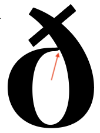
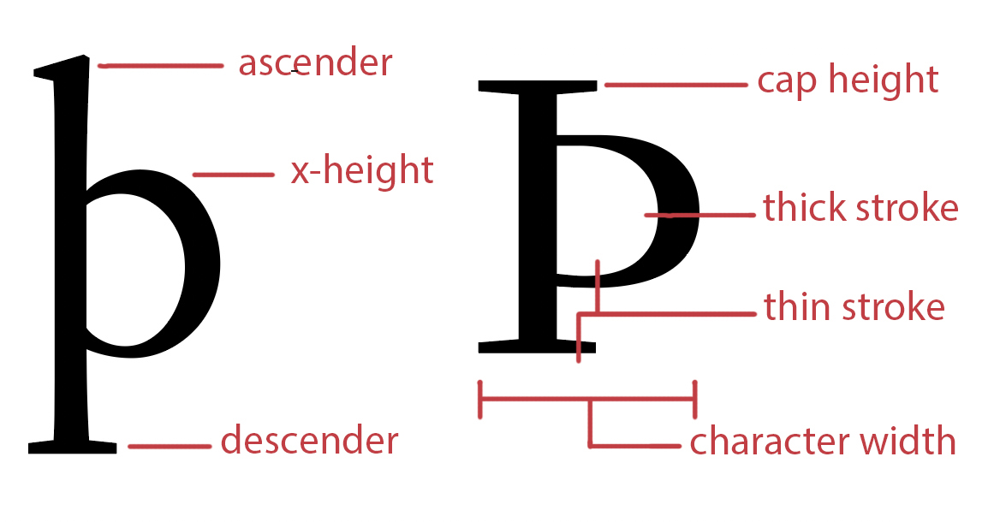

This page previews and tests a parametric version of Elstob, a font for medievalists. As the parametric font is experimental, its character set is a subset of that of the current version of Elstob, its collection of OpenType features is much reduced, and it has no italic face. As development continues, the missing glyphs and features will be restored.
A parametric font is a variable font in which each axis controls a single aspect of the design. By contrast, the axes of most variable fonts control several aspects.
For example, changing the Optical Size in the current version of Elstob changes the x-height, the character width, the descender depth, and the relationship between thick stems and thin stems. In ElstobP, those five aspects of the font’s design can be controlled separately, though optical sizes can still be selected via the font’s named instances (that is, preselected combinations of axis values, each one corresponding to a traditional static font file).
A parametric font offers at least two advantages over static fonts and even other variable fonts. The first of these is flexibility. You can use the font’s eight axes to create a custom instance—like the header on this page, in which the characters have been narrowed and the ascenders and descenders of letters like d and p have been lengthened. The second advantage, less visible but still important, is a sturdier infrastructure for the font: for it turns out that breaking a font’s design into separate components produces, in the end, higher quality outlines and a correspondingly better reading experience.
These advantages come at a cost: a parametric font is more challenging for users than a static font, or even another variable font. But the font’s numerous named instances provide easy access to the most common combinations of axis values and can also serve as starting points for your own customized version of the font.
This page works like the main specimen page for Elstob: select a text to display (or type or paste in your own) and play with the sliders to get a feel for how a parametric font works. The font’s eight axes are explained below.
A variable font axis has three key values: a minimum, a maximum, and a default value somewhere in between. In ElstobP, the default value for each axis is zero, while the minimum can be no less than -1000 and the maximum no more than 1000. For example, the Ascender height axis has a minimum of -1000 and a maximum of 562 because the minimum height of an ascender is almost twice as far from the default as the maximum height, as illustrated with the letter b (right). When all the axes are set to zero, the result is what in a conventional font is called “Regular.”
The eight axes can be combined in any way you like, and the number of combinations in this font’s multidimensional design space is, for practical purposes, infinite. Experiment with ElstobP on this page or in an application like FontGoggles to discover combinations that please you. A couple of caveats. First, and one hopes obviously, not every combination of parameters is guaranteed to look good. Second, and more importantly, outlines can become distorted when two or more axes are set at or near extreme values. This has happened with the ð (“eth”) on the right (where both the x-height and the Thick stroke axes are set to the maximum). Decrease either or both of these a little and the distortion where the stroke that closes the top of the bowl meets the right-hand stem disappears.
Elstob’s axes (except for Figure height, which applies only to the font’s default numbers) are here illustrated with the Icelandic letter thorn. The following list adds some details. Apps that, like the Adobe Creative Suite, are aware of variable fonts will display the English names of the axes. If you are writing the CSS for a web page, you will need the four-letter tags, which are used by the makers of most parametric fonts. (For easy CSS access to the font’s instances, copy the “Instance Classes” from the style sheet for this page.)